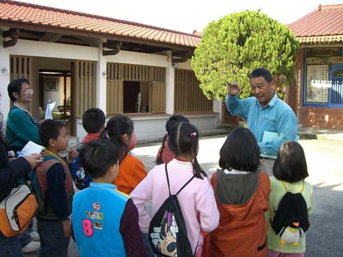

黃家古厝位於埔里愛蘭台地湧泉井附近， 是埔里少數歷史建築之一，被列為三級古蹟。 這座古厝已有八、九十年歷史，見證了埔里地區的開發與變遷， 是地方重要的文化資產。
古厝原為清代「番秀才」望麒麟的宅第。 望麒麟為埔社番人，幼年在埔里恆吉城讀書，後赴台南取得文秀才功名， 時人稱為「番仔秀才」。光緒初年，他與總兵吳光亮成為好友， 吳光亮協助勘查地理、設計格局，選定現址建屋。
望麒麟無子，獨生女望阿參招贅漢人 黃敦仁為夫。為顧及兩家香火， 生育八子中，長子姓望，其餘皆姓黃， 成為埔里平埔族與漢人通婚的典型例子， 也形成了望、黃兩姓的家族關係。
光緒21年，望麒麟在前往國姓北港村迎接日軍來埔里時， 回程被仇家買通原住民暗殺。 大正6年（1917）地震時，房子被震毀。 大正8年（1919），望麒麟的女婿黃敦仁聘請東勢角的 劉沛師傅，花三年時間於現址重建三合院建築， 建材為土角、紅磚和木材，並施彩繪。
1999年九二一大地震時，除正身外， 兩側土角厝建築傾倒，後代子孫請專家仿原貌重建完成。 如今，古厝以簡約古樸的風貌重新呈現，正廳保留傳統裝飾， 是埔里地區重要的歷史見證。
走進黃家古厝，彷彿穿越時空，每一磚一瓦都是滿滿的在地故事。
黃家古厝不僅是一座老宅， 更承載了埔里平埔族與漢人社會交流的歷史記憶。 它見證了愛蘭地區的開發、地方家族的興衰， 以及原住民族與漢人之間的文化融合。 古厝以木材、紅磚與傳統合院形式為主要特色， 在九二一地震後的重建過程中，後代子孫盡力保留原有風貌， 使古厝得以延續其歷史價值。 在快速變遷的時代裡，黃家古厝依然靜靜矗立， 守護著埔里台地的鄉土記憶與文化傳承。